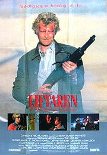

Попутчик (Hitcher)
1986 (+ сиквел и римейк)

Он смотрит на тебя, как на пушечное мясо
Первый фильм, отказавшийся от образа неубиваемого и гротескного образа маньяка-убийцы.
Простой американский парень подбирает на дороге мужика во время сильного ливня. Это завязка. Попутчик оказался маньяком: убивает всех встречных и поперечных. Например, микроавтобус с детьми вырезает полностью. Парень пытается избавиться от монстра в человеческом обличье и сообщить о происходящем в полицию. Но не тут-то было: маньяк убивает всех полицейских в участке. Началось преследование. Полиция считает виновным парня, а маньяка — выдуманным. В дальнейшем преступник продолжает убивать полицейских — но всегда так, чтобы подозрения падали на парня.
Win.
В фильме были «вопросы без ответа» — главгерой, решив, что полиция главманьяка не удержит, захватывает полицейскую машину. Удачно. Прошил маньяка из дробовика, но маньяк выжил. Возможно, маньяк был галлюцинацией, а главный герой — шизофреником, то есть протагонист сам убивал и сотрудников полиции, и случайных граждан. Когда его мозгом завладевало «второе я». Потом про что-то похожее показали в игре Manhunt 2. Особого колорита фильму добавляет отменная игра Рутгера Хауера, который настолько вжился в образ отморозка, что от него в перерывах между сценами ховались партнеры по съемочной площадке.
В 2003 году пиндосами был запилен сиквел, вышедший в том же году. От старой команды остался лишь постаревший Си Томас Хауэлл в роли главного героя первого фильма — терпилы Джима Холси. Сюжет сиквела связан с оригиналом весьма и весьма слабо: так несмотря на то, что Джим был косвено виновен в гибели нескольких копов, а потом ещё совершил самосуд над Попутчиком, он был не только прощён и помилован, но и принят на работу в полицию. Несмотря на то, что в первом фильме он выжил лишь благодаря милосердию полицаев (которые обычно стараются не брать живьём предполагаемых убийц своих коллег), в сиквеле он предпочитает действовать по принципу «Хороший преступник — мёртвый преступник», киляя бандюганов без суда. Через много десятилетий, уже порядком одряхлевший, но всё ещё матерый коп, он отправляется в путешествие по стране, где его ТП ловит не то воскресшего оригинального Попутчика, не то его весьма жалкого косплеера. Что примечательно, в середине фильма старина Джим меняет вероисповедание и решать проблему с маньяком приходится ТП. Кроме длинноствольного Smith Wesson Model 686 с тридцатисантиметровым стволом фильм больше ничем не цепляет.
Тащемта, существует одноименный ремейк 2007 года, за авторством Бея Майкла. Все экзистенциальные вопросы выброшены в мусорную корзину, но фильм таки действительно доставляет. Во-первых — теперь главных героев двое и один из них, это чрезвычайно фапабельная барышня София Буш (какая там экзистенциальщина? лютый дроч!). Во-вторых — теперь это не просто ужастик с намеком, а настоящий Roadmovie, что подразумевает постоянное движение, новые локации и авто-погони. В роли Попутчика выступает заслуженный Эддард Старк всея Винтерфелла. он же Боромир всея Новой Зеландии Шон Бин, что само по себе спойлер…
Алсо, в той стране самоиздавалась книга-новеллизация данного фильма за авторством Арча Стрэнтона (псевдоним отечественного графомана Ивана Сербина, начитавшегося Мэтра и решившего, что может не хуже) в серии «Бестселлеры Голливуда» (в той же серии и от того же автора — «Чужие», «Универсальный солдат» и «Дракула»). Небезынтересный экземпляр, акцент больше сделан на полумистическую сущность попутчика и тараканов главгероя. Концовка сделана в стиле Кинга.
Кстати говоря, сабж был спародирован в британском ситкоме «Майти Буш».
Напоследок, в том же 2007 году вышел малобюджетный пиндосский слэшер «The Hitchhiker» (рашк. дословн. автостопщик) со сходным сюжетом, получивший в отечественном прокате название «Попутчик. Дорога смерти».